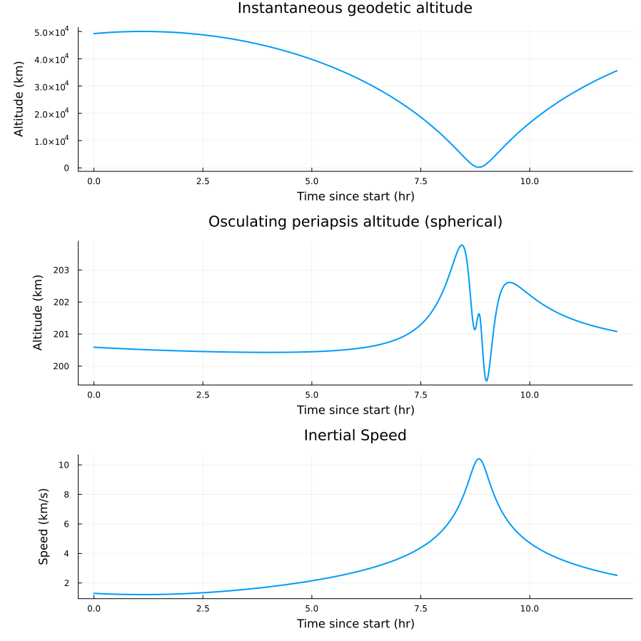
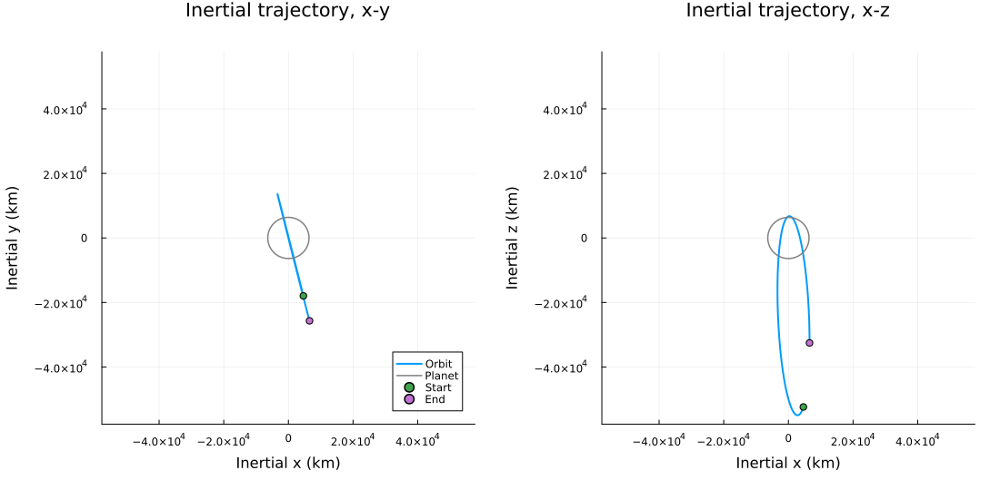

Quickstart
Use this page if you want the fastest path from clone to a successful local run.
This page is for first-time users who do not need GRAM or SPICE on day one.
The root environment is the canonical committed execution environment for the repository-owned quickstart path. There is no bootstrap step beyond instantiating it.
This default quickstart baseline is the Earth vacuum path: NoAtmosphereModel() plus SimpleEphemeridesModel().
SpaceAGORA requires Julia 1.12 (any 1.12.x release); julia --version must say so before you start. Julia 1.13 and older releases are refused, as described under Julia version.
Shortest successful path. Terminal, Linux/macOS: the first line creates the checkout, and the remaining lines run inside it, which is the repository root that every later command on this site assumes:
GIT_LFS_SKIP_SMUDGE=1 git clone --filter=blob:none https://github.com/Space-FALCON-Lab/SpaceAGORA.jl
cd SpaceAGORA.jl
julia --project=. -e "using Pkg; Pkg.instantiate(julia_version_strict=true)"
julia --project=. examples/AGORA_Basic_Quickstart.jljulia_version_strict=true makes the package manager stop with one clear message on a Julia release other than 1.12 instead of continuing into unrelated errors. Command blocks on this site say where they are typed: "Terminal" is the shell prompt (PowerShell or Command Prompt on Windows, a terminal on Linux/macOS), and "Julia REPL" is the julia> prompt inside a running Julia session.
What to read next:
Check the setup
Before the first run, confirm the installation. Terminal, from the repository root:
julia --version
julia --project=. -e "using SpaceAGORA; println(pkgdir(SpaceAGORA))"Expected: julia version 1.12. followed by the patch number, then the absolute path of your checkout. The second command compiles the package the first time and shows precompilation progress for several minutes; anything else printed is a problem, and Troubleshooting maps the common messages to their causes. The Julia REPL form of this check is on Installation & Environment.
The same check from the Julia REPL, confirming the no-GRAM baseline environment:
julia> using SpaceAGORA
julia> env = make_no_gram_environment();
julia> env.density_model isa NoAtmosphereModel
trueWhat to expect
Installation time depends on your connection and which Julia packages are already installed. The first run also compiles code, so allow more time for it than for later runs. The run prints the initial state of each spacecraft (position in m, velocity in m/s, mass in kg and accumulated heat loads in J/cm²), the number of saved samples and the computational time, and writes:
output/
simulation_results.csv
simulation_results.feather
simulation_results.manifest.toml
plots/
quickstart_altitude_speed.png
quickstart_inertial_trajectory.png
quickstart_3d_orbit.png
quickstart_ground_track.pngoutput/ is the repository root's output/ directory (gitignored). Running this example again overwrites its previous files; see Simulation Outputs for keeping runs apart.
The plots show the geodetic altitude, the osculating periapsis altitude and the inertial speed against time; the trajectory projected on the inertial x-y and x-z planes, with the planet's equatorial radius drawn for scale; the same trajectory in 3D; and the ground track. The example's orbit is nearly polar, so its x-y projection is close to a line, and its ground track runs along the top and bottom edges of the map while it passes the poles, where all longitudes meet.
The first two plots from a run of this example:


On Windows the variable is set in a separate statement, and the remaining three lines of the path above then run unchanged. Terminal, Windows PowerShell:
$env:GIT_LFS_SKIP_SMUDGE = "1"
git clone --filter=blob:none https://github.com/Space-FALCON-Lab/SpaceAGORA.jlTerminal, Windows Command Prompt:
set GIT_LFS_SKIP_SMUDGE=1
git clone --filter=blob:none https://github.com/Space-FALCON-Lab/SpaceAGORA.jlGIT_LFS_SKIP_SMUDGE=1 on the clone line keeps the seven GRAM surrogate grids under data/planets/gram_surrogate/ as small Git LFS pointers. They are about 2.5 GB, nothing on this path reads them, and git lfs pull --include "data/planets/gram_surrogate/*" fetches them later if a benchmark study needs them.
What this run gives you
The no-GRAM example is the shortest repository-owned path to a working local simulation. It does not require:
- a local GRAM installation
- SPICE kernels
- surrogate atmosphere grids
- the
data/GRAMSuite.jlsubmodule (it stays empty in a fresh clone)
If you prefer the CLI
The equivalent command-line path. Terminal, from the repository root:
julia --project=. src/interfaces/cli/main.jl run --example=AGORA_Basic_Quickstart.jl --output-dir=output/cli_run--output-dir is what keeps this run's files apart from the script run above: they land under output/cli_run/ with the same names. --smoke runs a two-minute mission that only checks the path end to end and honors the same --output-dir. Without an explicit output directory, smoke mode writes to output/ under the directory you run from. Reusing a directory overwrites its previous run's files.
Run the same scenario without plots
AGORA_Earth_NoGRAM.jl runs the same 12-hour Earth scenario, including make_no_gram_planet(:earth) and SimpleEphemeridesModel(), and writes the same three result files under output/ without generating plots. Terminal, from the repository root:
julia --project=. examples/AGORA_Earth_NoGRAM.jlThrough the command-line launcher, keeping its files in their own directory:
julia --project=. src/interfaces/cli/main.jl run --example=AGORA_Earth_NoGRAM.jl --output-dir=output/cli_runEarth_Thruster_Test.jl builds its planet with Earth("", SPICE_PATH) and needs the SPICE kernels shipped in the data/GRAMSuite.jl submodule; on a fresh clone it stops with "Required SPICE kernel not found". Run it after GRAMSuite Setup.
When to stop using this page
Move on as soon as one of these becomes true:
- you need higher-fidelity assets or licensed data
- you want to run a fuller scenario than the baseline no-GRAM example
- you want to inspect the files written under
output/ - you want the verification study rather than a first smoke run